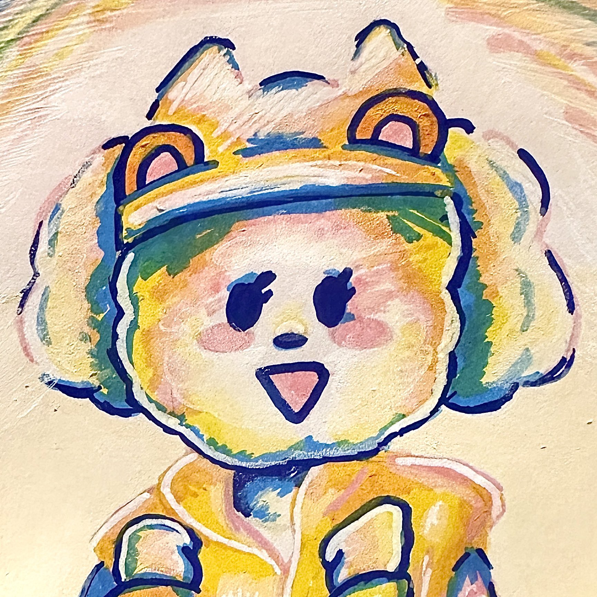

This site was created for COP4813 to demonstrate my web programming skills. Please, have a look around!
About Me
Hi! I'm Samantha Miller, a student passionate about web development, design, and creative, user-friendly interfaces. Allow me to show you my work! Whether looking for a polished, clean design or a more playful, interactive experience, I can create a website that meets your needs. I have experience with HTML, CSS, JavaScript, and various web development frameworks. My goal is to create websites that are not only visually appealing, but also functional and accessible to all users.
My Art

Student by day, artist by night!